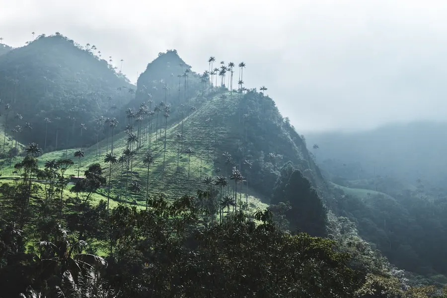
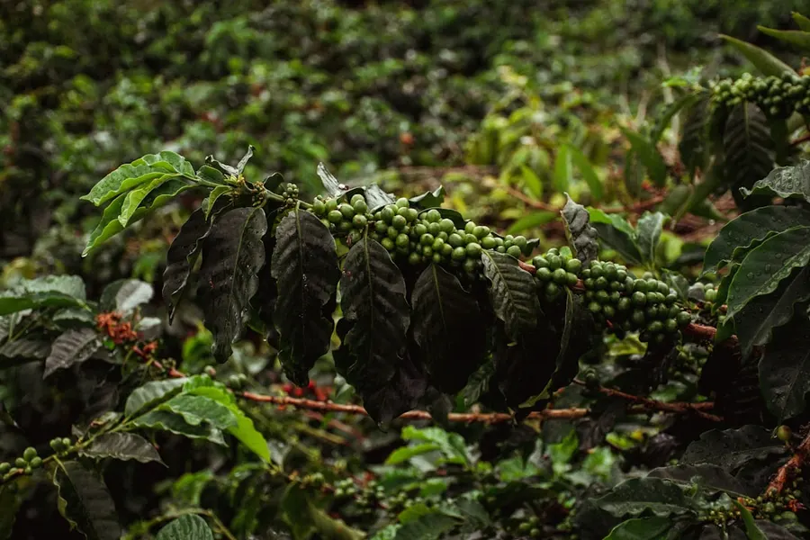
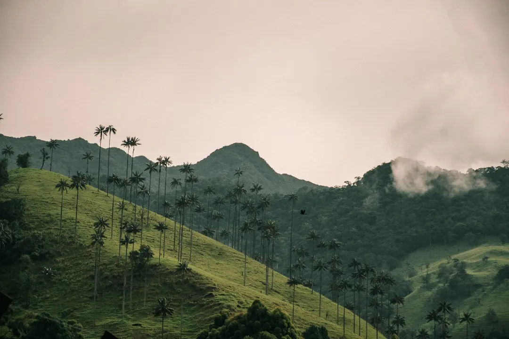

01 · Pourquoi y aller
Quels sont les attraits de la Colombie ?
La Colombie est un pays qui offre une grande diversité de paysages et de cultures. De la côte caraïbe aux Andes, en passant par la région de l'Amazonie, la Colombie est un véritable melting-pot de découvertes. Les voyageurs peuvent explorer les villes coloniales comme Cartagena, visiter les sites archéologiques comme Ciudad Perdida, ou simplement se détendre sur les plages de la côte caraïbe.
La Colombie est également réputée pour sa gastronomie délicieuse, qui allie les saveurs espagnoles, africaines et indigènes. Les voyageurs peuvent déguster des plats traditionnels comme la bandeja paisa, le sancocho ou les empanadas.


02 · Quand partir
Quelle est la meilleure période pour visiter la Colombie ?
Le mois d'août est un excellent moment pour visiter la Colombie, avec une météo généralement favorable et une ambiance festive qui accompagne les nombreux événements et fêtes de la saison. Les températures sont généralement agréables, avec des moyennes qui oscillent entre 20 et 25 degrés Celsius.
Cependant, il est important de noter que la saison des pluies peut affecter certaines régions du pays, notamment les Andes et la région de l'Amazonie. Il est donc recommandé de vérifier les prévisions météorologiques avant de partir.
03 · Les quartiers et zones à explorer
Quels sont les quartiers et zones incontournables de la Colombie ?
La Colombie compte de nombreux quartiers et zones qui offrent une grande variété de découvertes. La ville de Cartagena, par exemple, est connue pour son centre historique bien préservé, avec ses rues étroites et ses bâtiments coloniaux.
La ville de Medellín, quant à elle, est réputée pour son climat agréable et ses nombreux parcs et jardins. Les voyageurs peuvent également visiter la ville de Cali, qui est connue pour sa vie nocturne animée et ses nombreux festivals et événements culturels.

Photo : David Restrepo / Unsplash
04 · Que voir et que faire
Quels sont les incontournables de la Colombie ?
La Colombie offre une grande variété d'activités et de découvertes pour les voyageurs. Les amateurs de nature peuvent visiter les parcs nationaux comme le Parc national de Tayrona, qui offre des paysages époustouflants et des plages de sable blanc.
Les voyageurs peuvent également visiter les sites archéologiques comme Ciudad Perdida, qui est situé dans la jungle et offre une vue imprenable sur les ruines anciennes.
05 · Gastronomie et spécialités locales
Quels sont les plats traditionnels de la Colombie ?
La Colombie est réputée pour sa gastronomie délicieuse, qui allie les saveurs espagnoles, africaines et indigènes. Les voyageurs peuvent déguster des plats traditionnels comme la bandeja paisa, le sancocho ou les empanadas.
Les amateurs de café peuvent visiter les plantations de café de la région de Zona Cafetera, qui offre des paysages époustouflants et des dégustations de café de haute qualité.
06 · Où dormir selon son budget
Quels sont les hébergements recommandés en Colombie ?
La Colombie offre une grande variété d'hébergements pour les voyageurs, allant des hôtels de luxe aux auberges de jeunesse. Les voyageurs peuvent choisir d'héberger dans des villes comme Cartagena, Medellín ou Cali, qui offrent une grande variété d'options.
Les amateurs de nature peuvent également choisir d'héberger dans des lodges ou des éco-lodges, qui offrent une vue imprenable sur la nature et des activités de plein air.
07 · Combien coûte un voyage
Quel est le budget pour un voyage en Colombie ?
Le budget pour un voyage en Colombie peut varier en fonction des choix d'hébergement, de transport et d'activités. Les voyageurs peuvent s'attendre à payer entre 40 et 70 euros par jour, en fonction de leurs besoins et de leurs préférences.
Il est important de noter que les prix peuvent varier en fonction de la saison et de la disponibilité, il est donc recommandé de réserver à l'avance pour obtenir les meilleurs prix.
08 · Comment se déplacer sur place
Quels sont les moyens de transport en Colombie ?
La Colombie offre une grande variété de moyens de transport pour les voyageurs, allant des avions aux bus en passant par les taxis. Les voyageurs peuvent choisir de voyager en avion pour les longues distances, ou de prendre des bus ou des taxis pour les trajets plus courts.
Les amateurs de nature peuvent également choisir de marcher ou de faire du vélo pour découvrir les paysages et les villages locaux.
09 · Conseils pratiques avant de partir
Quels sont les conseils pour un voyage en Colombie ?
Il est important de prendre certaines précautions avant de partir pour la Colombie, notamment en ce qui concerne la sécurité et la santé. Les voyageurs doivent s'assurer d'avoir tous les vaccins nécessaires et de prendre des précautions pour éviter les maladies.
Il est également recommandé de prendre des copies de ses documents importants et de laisser une copie à un ami ou un membre de la famille en cas d'urgence.
Questions fréquentes sur Colombie
Faut-il un visa pour aller en Colombie ?
Les citoyens de nombreux pays, dont la France, n'ont pas besoin de visa pour entrer en Colombie. Cependant, il est recommandé de vérifier les exigences d'entrée avant de partir.
Quelle est la monnaie en Colombie ?
La monnaie officielle de la Colombie est le peso colombien. Les voyageurs peuvent échanger leur argent à l'aéroport ou dans les banques locales.
Combien de jours pour visiter la Colombie ?
La durée idéale pour visiter la Colombie dépend des intérêts et des préférences des voyageurs. Cependant, il est recommandé de passer au moins 2 semaines pour découvrir les principaux sites et expériences du pays.
Quelle est la météo en Colombie en août ?
La météo en Colombie en août est généralement favorable, avec des températures agréables et des précipitations modérées. Cependant, il est important de vérifier les prévisions météorologiques avant de partir.
Quels sont les dangers en Colombie ?
Comme dans tout pays, il y a des dangers en Colombie, notamment en ce qui concerne la sécurité et la santé. Cependant, les voyageurs peuvent prendre des précautions pour minimiser les risques et avoir un voyage sûr et agréable.
Le conseil Odyssa
N'oubliez pas de télécharger l'application Odyssa pour organiser votre itinéraire et trouver les meilleurs hébergements et activités en Colombie.
Planifiez votre séjour à Colombie jour par jour et gardez tout hors ligne avec Odyssa, gratuitement.